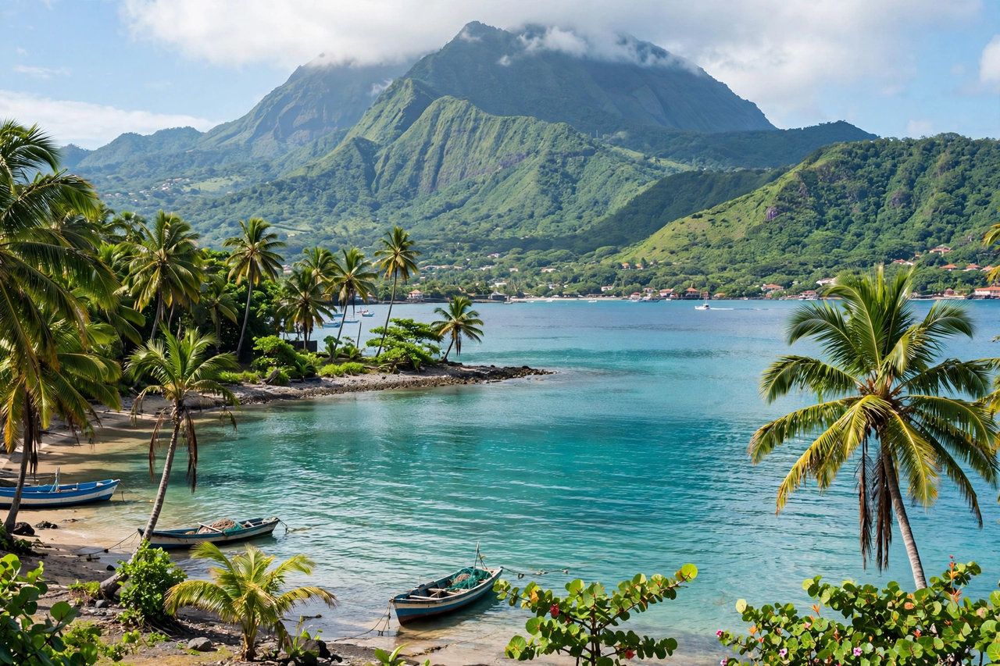

Overseas department and region of France in the Caribbean
| Martinique | |
|---|---|
 The Caribbean coast of Martinique, with Mount Pelée beyond | |
| Capital | Fort-de-France |
| Status | Overseas department and region of France; EU outermost region |
| Area | 1,128 km² |
| Population | About 350,000–360,000 |
| Languages | French (official); Martinican Creole widely spoken |
| Currency | Euro |
Martinique is an island in the Lesser Antilles of the Caribbean Sea and an overseas department and region of France. It lies north of Saint Lucia and south of Dominica. Its capital and largest city is Fort-de-France. As part of France, Martinique is part of the European Union, uses the euro, and its inhabitants are French citizens. The island's dominant geographic feature is the volcano Mount Pelée, whose 1902 eruption destroyed the former capital, Saint-Pierre.
The island was inhabited by Arawak and then Carib peoples; its Indigenous name is often given as Madinina, "island of flowers". Christopher Columbus sighted Martinique in 1493 and landed in 1502. France colonised the island from 1635, developing sugar plantations worked by enslaved Africans; slavery was finally abolished in 1848, championed by Victor Schœlcher. Britain occupied the island several times during the 18th and early 19th centuries. Martinique became a French overseas department in 1946, a change advocated and poet-politician Aimé Césaire, longtime mayor of Fort-de-France and deputy, helped shape.
The island is volcanic and mountainous in the north — Mount Pelée rises to 1,397 m — with a flatter, drier south of popular beaches. The economy rests on tourism, public administration, and agriculture, notably bananas and sugarcane for rum; Martinique's rhum agricole carries an AOC designation, unique in rum production. The island is also the birthplace of Joséphine de Beauharnais, first wife of Napoleon.
On 8 May 1902 Mount Pelée erupted catastrophically, annihilating Saint-Pierre — then the island's cultural capital, called the "Paris of the Caribbean" — and killing roughly 28,000–30,000 people, among the deadliest volcanic disasters in history.